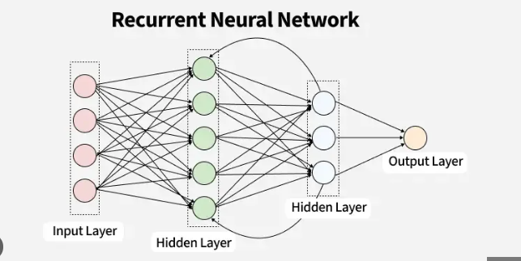

RNN#
Recurrent Neural Network (RNN) is a type of neural network designed to process sequential data, such as text, speech, time series, or videos. It differs from a standard neural network (ANN) because it remembers previous inputs using an internal hidden state (memory).
Why RNN?#
In many problems, context and order of inputs matter. For example:
Sentence |
Meaning |
|---|---|
“The food is good.” |
Positive |
“The food is not good.” |
Negative |
A normal feedforward neural network (ANN) treats each input independently. RNNs, however, can use previous words (context) to understand the full meaning.
Key Idea#
RNNs introduce a loop (recurrence) that allows information to persist across time steps.
At each time step:
The network reads one element of the sequence (e.g., a word).
It updates a hidden state that carries information from the past.
x1 → [RNN cell] → h1 → [RNN cell] → h2 → [RNN cell] → h3 → Output
↑ ↑
| |
feedback feedback

Mathematical Representation#
At time step \(t\):
Where:
Symbol |
Meaning |
|---|---|
\(x_t\) |
Input at time \(t\) (e.g., word vector) |
\(h_t\) |
Hidden state (memory) at time \(t\) |
\(y_t\) |
Output at time \(t\) |
\(W_x\) |
Weight matrix from input → hidden |
\(W_h\) |
Weight matrix from hidden → hidden |
\(W_y\) |
Weight matrix from hidden → output |
\(f\) |
Activation function (usually |
\(g\) |
Output activation (usually |
\(b_h, b_y\) |
Bias terms |
How It Works#
Input Sequence: Feed one input at a time — for example, words in a sentence:
x1 = “The”, x2 = “food”, x3 = “is”, x4 = “good”
Hidden State Update: At each step, RNN updates the hidden state based on:
The current input
The previous hidden state
Example:
h1 = f(Wx·x1 + Wh·h0 + b) h2 = f(Wx·x2 + Wh·h1 + b) ...
Output Generation: At the end, RNN produces an output (e.g., sentiment label 0 or 1).
Example: Sentiment Analysis#
For “The food is good”:
Time Step |
Input |
Hidden State |
Output |
|---|---|---|---|
t=1 |
“The” |
h₁ = f(Wx·x₁ + b) |
— |
t=2 |
“Food” |
h₂ = f(Wx·x₂ + Wh·h₁ + b) |
— |
t=3 |
“Good” |
h₃ = f(Wx·x₃ + Wh·h₂ + b) |
ŷ = positive |
RNN uses previous hidden states to understand that “not good” = negative sentiment.
Types of RNN Architectures#
Type |
Description |
Use Case |
|---|---|---|
Many-to-One |
Multiple inputs → One output |
Sentiment analysis |
One-to-Many |
One input → Sequence output |
Text generation, music |
Many-to-Many |
Sequence input → Sequence output |
Translation, speech recognition |
Advantages#
✅ Maintains temporal (sequence) relationships ✅ Works well with variable-length inputs ✅ Learns context through hidden state
Limitations#
❌ Vanishing Gradient Problem: Gradients shrink as they are propagated back through many time steps — the network “forgets” long-term dependencies.
❌ Exploding Gradient Problem: Gradients grow too large, making training unstable.
❌ Slow Training: Sequential processing prevents parallelization.
Solutions to RNN Limitations#
Variant |
Improvement |
|---|---|
LSTM (Long Short-Term Memory) |
Uses gates to retain long-term memory |
GRU (Gated Recurrent Unit) |
Simplified LSTM, faster |
Bidirectional RNN |
Reads sequence forward and backward for better context |
Attention Mechanism / Transformers |
Allows model to focus on relevant words directly (used in GPT, BERT) |
Common Applications#
Text generation (e.g., writing assistants)
Sentiment analysis
Speech recognition
Machine translation
Stock market prediction
Video frame prediction
Summary
Feature |
RNN |
|---|---|
Input |
Sequential |
Memory |
Yes (via hidden state) |
Key Equation |
( h_t = f(W_x x_t + W_h h_{t-1} + b_h) ) |
Activation |
tanh / ReLU |
Limitation |
Vanishing gradient |
Upgrades |
LSTM, GRU, Attention |